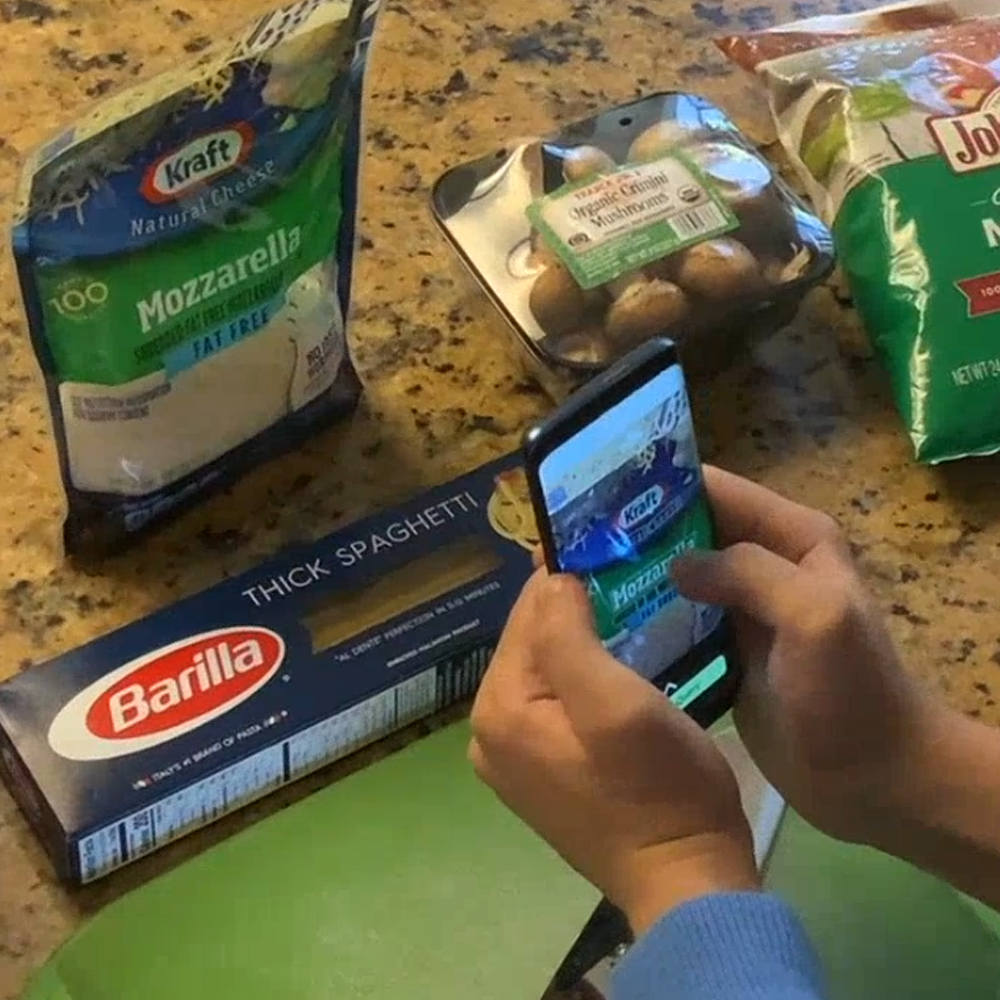
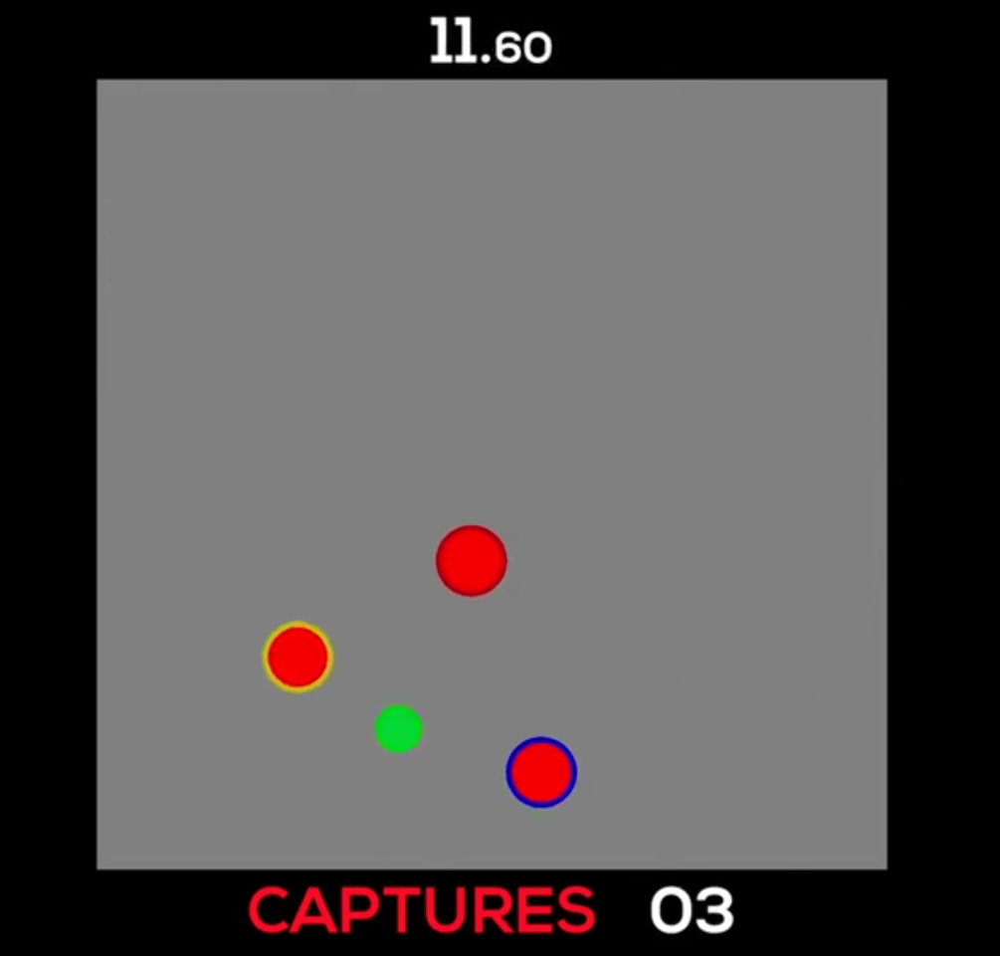

About Me
I'm a senior Ph.D. student at University of Illinois at Urbana-Champaign under the guidance of Professor Alex Kirlik. I'm a member of the Human-Computer Interaction research group.
My doctoral research focuses on studying the effects of over-trust and complacency in non-expert domains (e.g., recommender systems) through non-contextualized tasks, and how over-trust can affect everyday interactions between users and AI. My research draws from human-computer interaction, human-automation interaction, human factors, AI and ML, and game theory and design. My work was supported by the U.S. Army Combat Capabilities Development Command Army Research Laboratory (ARL) through a Journeyman Fellowship.
Before UIUC, I completed my B.S. in Computer Engineering at Northwestern University. I grasped the ropes of HCI under the tutelage of Professor Michael Horn and Professor Corey Brady, working on participatory simulations with hackable hardware in high-school classrooms.
Experience
Washington State University
Undergraduate Research Intern
2015

Northwestern University
Undergraduate Research Assistant
2015 - 2016
University of Illinois at Urbana-Champaign
Graduate Research Assistant
2016 - 2018
Army Research Laboratory
Research Intern
2018
Army Research Laboratory
Research Fellow
2018 - 2020

Facebook
Quantitative UX Research Intern
2021
Education
Ph.D. Student, Computer Science
Department of Computer Science
University of Illinois at Urbana-Champaign expected 2022
B.S., Computer Engineering
Department of Electrical and Computer Engineering (formerly Electrical Engineering and Computer Science)
Northwestern University 2016
Research
-

A Touch and Voice Multimodal Interaction Method for Personalizing Voice Assistants
Human speech often contains ambiguity from using demonstrative pronouns (e.g., "this" or "that"). Humans can easily discern what object the pronoun refers to, but current voice assistants (like Google Assistant or Siri) are yet unable to do so. Questions such as "what is the cost of this?" are met with a canned error response or an unrelated response (try it!). We built and examined a touch and voice multimodal voice assistant that enables users to select spatial information to embed in their queries. We found that complex queries are better resolved by the multimodal voice assistant without any elevated cognitive load. Users eventually became comfortable using demonstrative pronouns with voice assistants, appreciating and improving the human-likeness of conversations with voice assistants.
-

Perceptions, Attitudes, and Strategy Formation in Human-Agent Teams in a Continuous Game-theoretic Environment
Machine learning agents are closer in navigating continuous, uncertain environments. In practice, this leads to humans and agents (e.g., drones) completing physical tasks as a team. Agents could potentially outperform their human teammates, and this discrepancy can lead to human complacent behavior and loss in performance. In a between-subjects design, participants complete a pursuit task along a team of agents: either high performing or sub-par performing. We measure individual and team performance, along with survey metrics (trust, complacency potential, motivation) and a situation awareness probe to understand how varying reliability affects performance and trust calibration.
Perception/Attitudes: SPIE 2020 Paper
Strategy Formation: SPIE 2019 Paper, CSCI 2019 Short Paper, SPIE 2020 Paper, CSCE 2020 Paper -

Knowledge Complacency in Decision Support Systems
Decision support systems (DSS) are often based on complex machine learning models, and have become a core part of analytics and sensemaking processes. An under-investigated factor in trust and complacency research is the effect that DSS might have on human learning of domain knowledge. We conduct a comparative analysis of two between-subjects studies of users interacting with decision aids to understand how knowledge acquisition and retention is affected by the competence and presentation of a DSS. Results indicate that while humans can internalize domain concepts while being aided by a DSS, features that make the DSS appear more competent, persuasize, or customizable may lead a user to form incorrect beliefs.
-

Participatory Simulations for CS Education with a Hackable Electronic Conference Badge
Computer science (CS) is becoming an increasingly diverse domain. This work reports on an initiative designed to introduce underrepresented populations to computing using a multifaceted approach. This article outlines the practical and theoretical motivations for the Computational Thinking for Girls (CT4G) project, specifically highlighting the use of Making through physical and social computing as ways to engage students in CS. A snapshot of one activity from the program is provided - Wearing the Web - in which students use open-hardware programmable badges to explore the underlying structure and technology that enables the Internet. Data from the first year of the CT4G program are presented to show the positive effects that this diverse introduction to CS is having on the students with respect to their attitudes toward CS.
Cool Facts
- I'm Peruvian-Colombian, and I spent most of my childhood (and some adolescence) in Perú.
- "Sebas" (SEH-bahs) is a nickname my family and friends gave me in Perú.
- I enjoy social dancing very often, almost exclusively Latin dancing!
- I've been playing percussion for 12 years.
- Both my Spanish and English-speaking friends say I have an accent on each respectively. :v
© Sebastian S. Rodriguez. Last Updated: September 2021